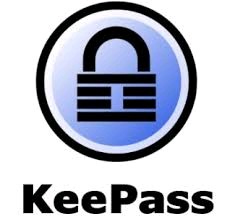

KEEPASS

KEEPASS est un gestionnaie de mots de passe publié sous la licence libre GPL v2 ou ultérieure, permettant de sauvegarder un ensemble de mot de passe dans une base de données chiffrée sous la forme d'un seul fichier dont l'extension est *.kdb ou *.kdbx selon la version.